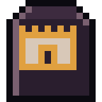

Guides / 05

The base
Marking it out, walls, doors, chests, garden, traps and the nightly attack.
The base is where you keep what you've gathered, sleep and cook. Every night the dead pound on the walls.
Marking out
- With the session on, open the base menu and tap Mark out base.
- Tap the grid to mark the corners (up to 60 m from you). Tap the first corner again to close it.
- Tap Mark out base to confirm.
It starts at 50 m², and grows with expansion kits and with people in the group. It must be at least 30 m from another base.
Walls, doors and windows
- Building walls are free and don't fall.
- Your own walls: 1 plank and 1 nail every 4 m. You can reinforce them with sheet metal and then with concrete.
- Door: 3 planks and 2 nails. Window: 2 planks and 1 nail (nailed planks reinforce it).
- Repair the weakest wall uses 1 plank and 1 nail.
An open door or a fallen wall = an open base.
Furniture
On the action screen, inside the base, use the hammer to build and USE to use:
- Chest: 40 kg each. Nothing goes in by itself: you store it.
- Workbench: recipes and repairs.
- Bed: much better rest. Stretcher: treated wounds heal faster.
- Table, campfire (light and noise at night), wood stove (almost no light).
- Rain barrel: collects water when it really rains.
- Watchtower: see farther near the base. Floodlight: needs a generator and gasoline.
- Mailbox: the market (see the group guide).
Garden
Up to 4 garden beds: Plant the seeds, Water them (each watering lasts a day) and Harvest after about 3 watered days.
Traps
- Stakes and covered pit: catch attackers and need to be reset.
- Tin can wire: an alarm that warns you and reduces the damage.
The nightly attack
At 1 AM the base is attacked, even with the app closed (up to 3 missed nights are resolved when you come back). Bigger walls, a lit campfire and a floodlight that is on draw more of them. The traps catch some; the rest pound on the walls, doors and windows.
If a wall falls or a door is left open, the chests lose part of what is inside (clothes stay). The week's horde also passes through the base if its route comes close.
The radio vault and the outposts
The radio vault is yours alone, with 300 kg, and you reach it from any outpost or tent. In it are the vault, the workbench, the radio to go back to the base, the mail (market and general store), the wardrobe and the shelf of memories. The clothes in the wardrobe stay even after death.
You can have up to 10 outposts, between 200 m and 20 km from the base and 100 m from each other. The first one is free; the others need an outpost radio.
Guias / 05
A base
Demarcar, paredes, portas, baús, horta, armadilhas e o ataque de toda noite.
A base é o lugar onde você guarda o que juntou, dorme e cozinha. Toda noite os mortos batem nas paredes.
Demarcar
- Com a sessão ligada, abra o menu da base e toque em Demarcar base.
- Toque na grade para marcar os cantos (até 60 m de você). Toque no primeiro canto de novo para fechar.
- Toque em Demarcar base para confirmar.
Começa com 50 m², e cresce com kits de expansão e com gente no grupo. Precisa estar a pelo menos 30 m de outra base.
Paredes, portas e janelas
- Paredes de prédio são de graça e não caem.
- Paredes suas: 1 tábua e 1 prego a cada 4 m. Dá para reforçar com chapa e depois com concreto.
- Porta: 3 tábuas e 2 pregos. Janela: 2 tábuas e 1 prego (tábuas pregadas reforçam).
- Consertar a parede mais fraca gasta 1 tábua e 1 prego.
Porta aberta ou parede caída = base aberta.
Móveis
Na tela de ação, dentro da base, use o martelo para montar e USAR para usar:
- Baú: 40 kg cada. Nada entra sozinho: guarde você.
- Bancada: receitas e consertos.
- Cama: descanso bem melhor. Maca: feridas tratadas cicatrizam mais rápido.
- Mesa, fogueira (luz e barulho à noite), fogão a lenha (quase sem luz).
- Barril de chuva: junta água quando chove de verdade.
- Torre de vigia: enxerga mais longe perto da base. Holofote: precisa de gerador e gasolina.
- Caixa de correio: o mercado (veja o guia de grupo).
Horta
Até 4 canteiros: Plantar as sementes, Regar (cada rega dura um dia) e Colher depois de uns 3 dias regados.
Armadilhas
- Estacas e buraco coberto: pegam atacantes e precisam ser rearmados.
- Arame com latas: alarme que avisa e reduz o estrago.
O ataque de toda noite
À 1h da manhã a base é atacada, mesmo com o app fechado (até 3 noites perdidas são resolvidas quando você volta). Paredes maiores, fogueira acesa e holofote ligado atraem mais gente. As armadilhas pegam alguns; os outros batem nas paredes, portas e janelas.
Se alguma parede cair ou porta ficar aberta, os baús perdem parte do que tem dentro (roupas ficam). A horda da semana também passa pela base se a rota chegar perto.
O depósito do rádio e os postos
O depósito do rádio é só seu, com 300 kg, e você chega nele de qualquer posto avançado ou barraca. Lá ficam o depósito, a bancada, o rádio para voltar à base, o correio (mercado e armazém), o armário de roupas e a estante de memórias. As roupas do armário ficam mesmo depois da morte.
Você pode ter até 10 postos avançados, entre 200 m e 20 km da base e a 100 m uns dos outros. O primeiro é de graça; os outros pedem um rádio de posto.
Guías / 05
La base
Delimitar, paredes, puertas, cofres, huerta, trampas y el ataque de cada noche.
La base es el lugar donde guardas lo que juntaste, duermes y cocinas. Cada noche los muertos golpean las paredes.
Delimitar
- Con la sesión activa, abre el menú de la base y toca Delimitar base.
- Toca la cuadrícula para marcar las esquinas (hasta 60 m de ti). Toca de nuevo la primera esquina para cerrar.
- Toca Delimitar base para confirmar.
Empieza con 50 m², y crece con kits de expansión y con gente en el grupo. Tiene que estar a por lo menos 30 m de otra base.
Paredes, puertas y ventanas
- Las paredes de edificio son gratis y no caen.
- Tus paredes: 1 tabla y 1 clavo cada 4 m. Se pueden reforzar con chapa y después con concreto.
- Puerta: 3 tablas y 2 clavos. Ventana: 2 tablas y 1 clavo (las tablas clavadas refuerzan).
- Reparar la pared más débil gasta 1 tabla y 1 clavo.
Puerta abierta o pared caída = base abierta.
Muebles
En la pantalla de acción, dentro de la base, usa el martillo para armar y USAR para usar:
- Cofre: 40 kg cada uno. Nada entra solo: guárdalo tú.
- Banco de trabajo: recetas y reparaciones.
- Cama: descanso mucho mejor. Camilla: las heridas tratadas cicatrizan más rápido.
- Mesa, fogata (luz y ruido de noche), cocina de leña (casi sin luz).
- Barril de lluvia: junta agua cuando llueve de verdad.
- Torre de vigía: ves más lejos cerca de la base. Reflector: necesita generador y gasolina.
- Buzón: el mercado (mira la guía de grupo).
Huerto
Hasta 4 huertos: Plantar las semillas, Regar (cada riego dura un día) y Cosechar después de unos 3 días regados.
Trampas
- Estacas y pozo cubierto: atrapan atacantes y hay que rearmarlas.
- Alambre con latas: alarma que avisa y reduce el daño.
El ataque de cada noche
A la 1 de la madrugada la base es atacada, incluso con la app cerrada (hasta 3 noches perdidas se resuelven cuando vuelves). Paredes más grandes, fogata encendida y reflector prendido atraen a más. Las trampas atrapan a algunos; los demás golpean las paredes, puertas y ventanas.
Si alguna pared cae o una puerta queda abierta, los cofres pierden parte de lo que tienen adentro (la ropa se queda). La horda de la semana también pasa por la base si la ruta llega cerca.
El depósito de la radio y los puestos
El depósito de la radio es solo tuyo, con 300 kg, y llegas a él desde cualquier puesto avanzado o tienda de campaña. Ahí están el depósito, el banco de trabajo, la radio para volver a la base, el buzón (mercado y almacén), el armario de ropa y la estante de memorias. La ropa del armario se queda incluso después de la muerte.
Puedes tener hasta 10 puestos avanzados, entre 200 m y 20 km de la base y a 100 m unos de otros. El primero es gratis; los demás piden una radio de puesto avanzado.